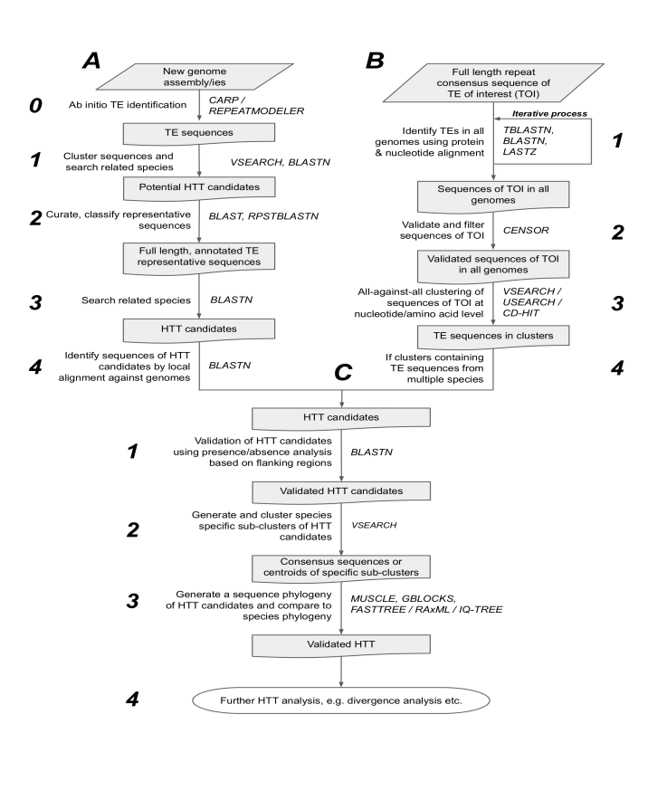

{:.no_toc}
The specific steps for the identification of HTT events are typically applied to two scenarios with distinct workflows (A and B in Figure 1) that converge at the stage where HTT candidates are validated (C in Figure 1). Workflows A, B and C are described below, with numbered steps in each section that link back to Figure 1.

Our methods are implemented in Linux/R and we assume that users will be familiar with the bash shell and R. Some level of familiarity with queuing systems in HPC is also recommended.
Pipeline A is designed to identify potential horizontally transferred sequences in newly sequenced genomes based on their absence from the genome of a closely related species.
All input files should be FASTA files. Raw repeats can be from any ab
initio software package. Input genomes should be in
Pipeline_A/genomes/ folder.
Usage
NOTE: Assume you are in Pipeline_A folder to run the following scripts.
0) Ab initio TE annotation using RepeatModeler.
Run HT_stage_0.sh
GENOME=<source_genome> THREADS=<number of threads to use> bash HT_stage_0.sh
1) Cluster and perform initial sweep and generate multiple alignments for manual curation of repeats.
Run HT_stage_1.sh
GENOME=<source_genome> OUTGROUP=<outgroup_genome> QUERY=<file_containing_raw_repeats> THREADS=<number of threads to use> bash HT_stage_1.sh
This script performs an initial search for sequences which have 2 or more copies in the query genome and are absent from the outgroup genome. If any sequences are absent from the outgroup a multiple sequence alignment will be created for curation.
2) Manually curate the alignments in Geneious, JalView or the like.
This is necessary as most ab initio aligners do not capture full repeats, and some families may be classified incorrectly. Additionally, this step can reveal redundant sequences not removed from clustering, e.g. non-autonomous DNA transposons derived from autonomous DNA transposons.
3) Confirm HTT condidates based on either repeating local alignment finding absence or higher-than-expected-divergence from the genomes of them most closely related species.
Run HT_stage_2.sh using curated repeats as input.
GENOME=<source_genome> SPECIES=<name_of_source_species> OUTGROUP=<outgroup_genome> QUERY=<file_containing_curated_repeats> THREADS=<number of threads to use> bash HT_stage_2.sh
This script carries out a validation of the initial search using consensus sequences generated from the curation step. This is necessary as fragmented repeats which appeared to be mssing from an outgroup species may in fact be present. For example, when searching with TEs from a seal genome using a mustelid as the outgroup, stage 1 identified 4 L1 fragments which appeared to be absent from the mink. After curation it became clear those L1s were in fact present in the mustelid, just not identifed in the initial sweep, likely due to their truncation/fragmentation. The initial curation step fixes this problem by ensuring that searches of the outgroup genome are done with queries that contain the complete TE of interest.
4) Local alignment of HTT condidates against all available genomes to identify most closely related sequences and species with no hits.
Run HT_stage_3.sh
GENOME=<name_of_source_species> OUTGROUPS=<file_containing_list_of_genomes> QUERY=<file_containing_curated_repeats> THREADS=<number of threads to use> bash HT_stage_2.sh
This script searches for repeats verified as HTT candidates, searches for them in other species (from a list provided) and creates a MSA of each repeats if identified in a species ready for curation. This script is written to utilise genomes downloaded from Genbank and present in the Pipeline_A/genomes/ folder and gzipped. If necessary modify this script for your particular situation.
Example usage for Pipeline A
Pipeline B is used for detecting potential horizontal transfer events, starting from a set of curated repeat consensus sequences from available sources (e.g. RepBase or Dfam) for the TE of interest.
It is a simplified version of the code used to infer horizontal transfer events involving L1 and BovB retrotransposons in eukaryotes (Ivancevic et al., Genome Biology, 2018).
Usage
NOTE: Assume you are in Pipeline_B to run following scripts.
0) Download and prepare the genomes you want to screen.
0a) Append species names to the genome name.
As the names given to genome assemblies are not usually informative, you will want to append species names to the genome names.
Run 0a_rename_genome.sh.
Example usage:
GENOME=<source_genome> SPECIES=<species_name> bash 0a_rename_genome.sh
0b) Make each genome a BLAST database and create indexes.
Run 0b_make_database_and_index.sh.
Example usage:
bash 0b_make_database_and_index.sh
1) BLAST TE of interest against all available genomes.
1a) Use TBLASTN with protein sequence queries.
This will identify similar TEs in distantly related species. Output will be nucleotide sequences.
Run 1a_tblastn_and_extract.sbatch.
Example usage:
DIR=test_genome DATABASE=YarrowiaLipolytica_ASM252v1.fa QUERY=L1_ORFp.fasta RESULTSDIR=results sbatch 1a_tblastn_and_extract.sbatch
1b) (Optional) Use BLASTN or LASTZ with nucleotide sequence queries.
Run 1b_lastz_and_extract.sbatch.
Example usage:
GENOMEDIR=test_genome GENOME=YarrowiaLipolytica_ASM252v1.fa QUERYDIR=test_query QUERY=L1_nucl_seqs.fasta RESULTSDIR=results sbatch 1b_lastz_and_extract.sbatch
1c) For each genome, combine all identified nucleotide sequences from the previous steps.
Example usage:
SPECIES=YarrowiaLipolytica ELEMENT=L1 LASTZFILE=YarrowiaLipolytica_ASM252v1.fa_L1_nucl_seqs.fasta_lastz.bed TBLASTNFILE=YarrowiaLipolytica_ASM252v1.fa_L1_ORFp.fasta_merged.bed GENOME=YarrowiaLipolytica_ASM252v1.fa RESULTSDIR=results sbatch 1c_combine_hits.sbatch
1d) Add header annotations to indicate the genome that each sequence was derived from.
Run 1d_append_name_to_headers.sh.
Example usage:
SPECIES=YarrowiaLipolytica ELEMENT=L1 RESULTSDIR=results bash 1d_append_name_to_headers.sh
Repeat screening in an iterative process (e.g. BLAST-ing the new, larger, query dataset against each genome and then combining the output) until no new hits are found.
2) Perform a reciprocal best hit check.
2a) Use CENSOR to compare hits against known repeat databases (e.g. RepBase or Dfam).
Run 2a_censor_sequences.sbatch.
Example usage:
INDIR=results FILE=YarrowiaLipolytica_L1_combined.fasta OUTDIR=results/censored sbatch 2a_censor_sequences.sbatch
2b) Confirm and extract hits that match the correct TE family.
Run 2b_check_censor_output.sbatch.
Example usage:
SPECIES=Yarrowia.lipolytica FILE=Yarrowia.lipolytica_L1_combined.fasta GENOME=test_genome/YarrowiaLipolytica_ASM252v1.fa ELEMENT=L1 QUERY=test_query/known_L1_elements_from_repbase.txt CENSORDIR=results/censored sbatch 2b_check_censor_output.sbatch
3) Cluster all sequences obtained from the iterative alignment screening.
Prior to this step, you will need to combine hits from all genomes into one file. Make sure that sequence headers indicate the species that each TE sequence was derived from.
This clustering step is important as it will reveal likely HTT events which are manifested as clusters of highly similar elements that include elements from multiple species. We have found it best to use sequence divergence cut offs that cluster most closely related sequences (e.g. <20% divergent).
3a) All-against-all clustering of nucleotide sequences using VSEARCH.
You can use full-length nucleotide sequences, or nucleotide sequences of the open reading frames only.
Run 3a_vsearch_cluster_for_nucleotide_seqs.sbatch, changing the clustering identity threshold (ID) as required.
Example usage:
INDIR=results/allSpeciesCombined FILE=allSpecies_L1.fasta ID=80 PREFIX=c sbatch 3a_vsearch_cluster_for_nucleotide_seqs.sbatch
3b) All-against-all clustering of amino acid sequences using USEARCH.
VSEARCH (the open source alternative to USEARCH) does not support protein sequences, but will not fail if given protein sequence input. Make sure you use another program (e.g. Cd-hit or USEARCH) to clustering amino acid sequences. The 32-bit version of USEARCH is open source.
The following script can be used to perform all-against-all cluserting of amino acid sequences from ORFs, or reverse transcriptase domains from retrotransposons/transposase domains from DNA transposons.
Run 3b_usearch_cluster_for_aa_seqs.sbatch.
Example usage:
INDIR=results/allSpeciesCombined FILE=allSpecies_L1_ORFp.fasta ID=90 PREFIX=r sbatch 3b_usearch_cluster_for_aa_seqs.sbatch
4) Identify clusters containing TE sequences from multiple species (e.g. based on the sequence header names).
These clusters are the HTT candidates.
Test dataset for Pipeline B
A test genome (fungus Yarrowia lipolytica) has been placed in test_genome, along with a set of L1 repeats as a test_query. We recommend trying out the workflow using these files first.
Pipeline C includes several additional steps to validate detected HTT candidates from Pipeline A or Pipeline B. Manually checking will be required in this section.
Usage
NOTE: Assume you are in Pipeline_C folder to run these following scripts.
1) Presence/absence analysis based on flanking regions.
Extend individual TE insertions with 1-2kb of flanking sequence and align those sequences to the genomes of related/target species. Use the coordinates from these alignments to find the ends of the target sequences and extract those sequences from the target genomes. The query and target sequences are then globally aligned (MAFFT/MUSCLE) to determine presence/absence compared to ancestral insertions in related taxa (Manually checking in aligment viewer will be required).
2) Generate and cluster species-specific sub-clusters using VSEARCH or USEARCH, and align all sub-clusters to create consensus sequences, or identify centroids.
Example usage (please modify job settings according to your HPC environment):
INDIR=results FILE=HTT_condidates.fasta ID=80 sbatch 2_usearchConsensus.sbatch
3) Align all consensus sequences/centroids to generate a sequence phylogeny.
Global multisequence alignment of representative sequences to generate a phylogenetic tree of HTT candidate sequences. This phylogenetic distribution of representative sequences can be compared to the species phylogeny to see if it is discordant.
Run 3_alignRefineAndTree.sbatch
Example usage (please modify job settings according to your HPC environment):
INDIR=results FILE=HTT_condidates_centroids.fasta MINBLOCKSIZE=5 ALLOWEDGAPS=a sbatch 3_alignRefineAndTree.sbatch
4) Further analysis
Divergence analysis of HTT candidate clusters to determine activity profile and ensure that this profile is consistent with transfer from the most closely related TE from another species. Additional/alternative methods might include:
using a k-mer based method (e.g Jellyfish) to compare k-mers within TE sequences. Jellyfish provides an alignment-free alternative for detecting similarities in TEs across species.
using intact ORFs to determine how recently TEs in different species were likely active, to estimate the timing of potential HTT events.
BLAST-ing sequences from HTT candidate clusters against all eukaryotes on NCBI (not just your database of genomes) to identify potential vector/source species.
“Remember that all models are wrong; the practical question is how wrong do they have to be to not be useful.” George Box in; Box, G.E.P. and Draper, N.R. Empirical Model Building and Response Surfaces. John Wiley & Sons, New York. (1987).